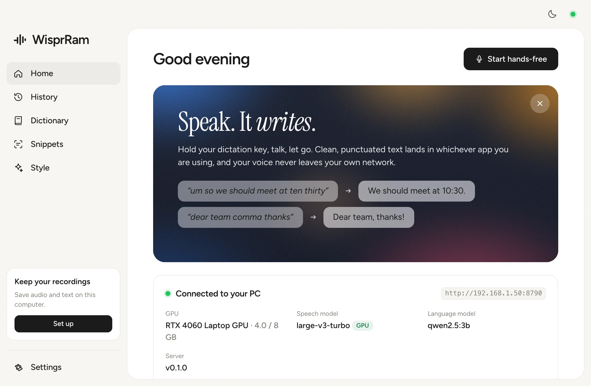
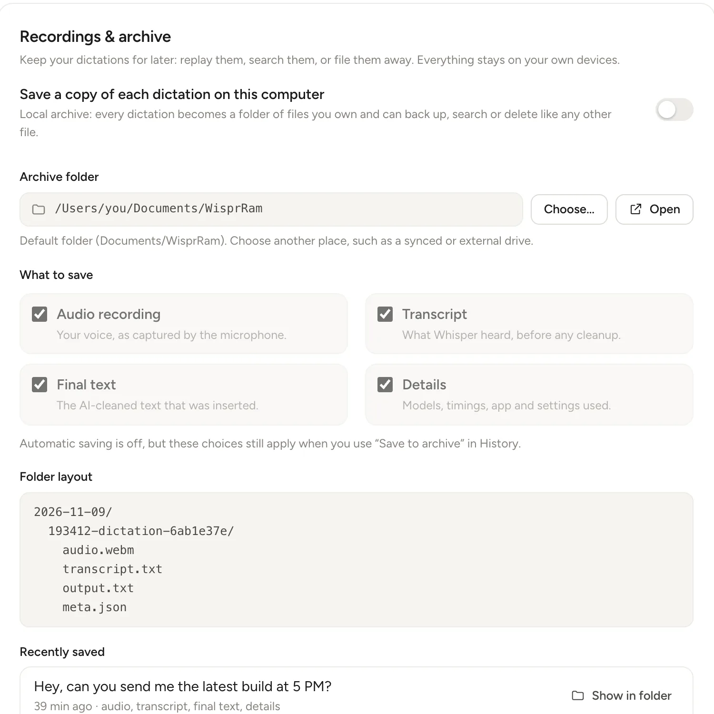
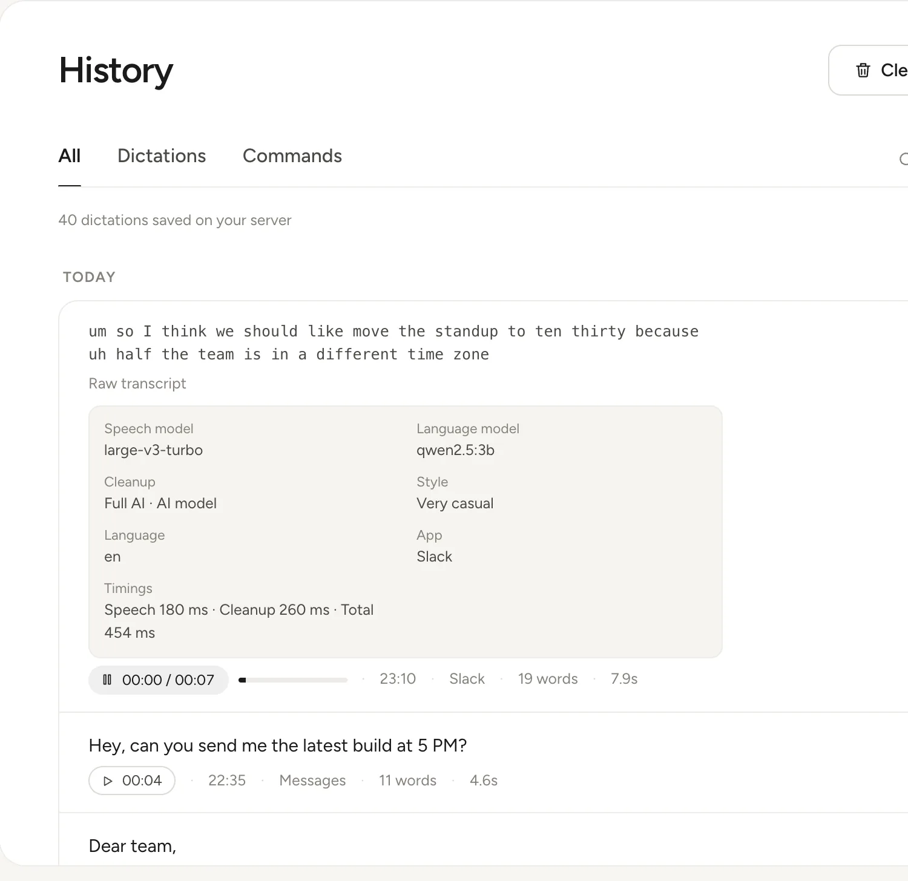

Push-to-talk, anywhere
Hold Right Option or Right Ctrl, talk, let go. The text is typed into whatever app has focus. Double-tap to lock hands-free; Esc cancels.
Free · open source · self-hosted
Hold a key, speak, and clean text appears in any app. WisprRam runs speech recognition and cleanup on a machine you own, so your voice never leaves your network.
macOS, Windows and Linux · MIT licensed · Other platforms
And one thing you do not: someone else's server.
Hold Right Option or Right Ctrl, talk, let go. The text is typed into whatever app has focus. Double-tap to lock hands-free; Esc cancels.
Drops the ums and uhs, resolves self-corrections (“at 4, no, 5” becomes “at 5”), fixes punctuation, turns spoken lists into lists. Choose none, light or full.
Select text, press Ctrl/⌘ Shift E and say “make this more polite” or “translate to Spanish”. The selection is replaced in place.
Teach it your names, products and jargon. They are given to Whisper as hotwords and to the LLM as preferred spellings.
Formal in Mail, casual in Slack, very casual in Messages. Pick a default and override it for any app.
Search, copy and replay everything you dictated, and see your words, speed and streak. Delete anything, any time.
No cloud, no accounts, no telemetry. Audio travels from your computer to your server and nowhere else. Use Tailscale to reach it away from home.
faster-whisper large-v3-turbo on CUDA plus a small local LLM: under a second for a typical sentence, with a CPU fallback when there is no GPU.
Light Electron apps for all three, with a tray icon, an overlay pill and sound cues. One server serves every computer you own.
It lives in your menu bar or tray. Open it to connect, tune your style, or look back.



Three steps, all inside your own network.
The app records from your microphone and shows the overlay pill. Release the key to finish.
Your Mac, Windows or Linux PCfaster-whisper turns audio into text, then rules and a local Qwen model clean it up, in well under a second.
Your Linux machine with an NVIDIA GPUThe result is pasted into the app you were using, and optionally archived on your computer.
Any app with a text fieldRTX 4060 Laptop (8 GB), large-v3-turbo plus qwen2.5:3b, median of 10 requests from audio upload to cleaned text.
Pick your system. Installers are unsigned, so your OS will ask you to confirm once; the setup steps below explain how.
All releases and checksums on GitHub. You can also build it yourself.
First the server on your GPU machine, then the app on your computer.
The installer checks all of this and tells you how to fix anything missing. Full guide: Server setup.
Install Ollama if you do not have it
curl -fsSL https://ollama.com/install.sh | shGet the code and run the installer
git clone https://github.com/OpenVibes/wisprram
cd wisprram/backend
./scripts/install.sh --serviceGet a 6-digit pairing code (valid 10 minutes)
./scripts/run.sh pairThe installer pulls qwen2.5:3b, downloads the 1.6 GB speech model, installs a systemd user service, and prints your server URL (like http://192.168.1.50:8790) plus the firewall command for your distro. Run sudo loginctl enable-linger $USER to keep it running after you log out.
xattr -dr com.apple.quarantine /Applications/WisprRam.appsudo apt install ./wisprram_*_amd64.debchmod +x and run the AppImage.
sudo apt install wtype xdotool.Settings and logs live in ~/Library/Application Support/WisprRam (macOS), %APPDATA%\WisprRam (Windows) and ~/.config/WisprRam (Linux). Full guide: App setup.
A GPU makes dictation feel instant: about 0.4 s for a short clip. Without one the server falls back to a smaller Whisper model on the CPU, around 1.5 s for 3 seconds of speech, which is still usable.
Whisper large-v3-turbo handles around 100 languages and can detect the language automatically. Fixing the language saves about 0.2 s. Cleanup quality outside English depends on the LLM you choose; Qwen2.5 is decent in the major languages.
Yes, through a VPN. Install Tailscale on the server and your laptop and use the Tailscale address as the server URL. Never expose port 8790 to the internet.
Signing certificates cost money and this is a free, independent project. macOS needs one xattr command and Windows shows a SmartScreen prompt once. If you prefer, build it from source; the repository has scripts for all three platforms.
Yes. ollama pull qwen2.5:7b and set it in the server settings. It follows instructions better and needs about 5 GB of VRAM and a few hundred milliseconds more.
Only if you ask. By default the audio is discarded as soon as the text is produced. You can switch on a local archive in the app, and optionally audio retention on the server so you can replay history from any device.
Same idea (hold a key, speak, polished text appears), but WisprRam is open source and self-hosted: you run the models, you own the data, and there is no subscription. It is an independent project, not affiliated with Wispr.
Not yet. The server has a plain HTTP API, so one could be built; see the API reference in the docs.